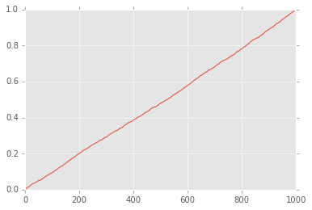

Table of Contents¶
0.1 pandas notes
0.2 環境準備
0.3 データ準備のための準備
0.3.1 [0, 1)
0.4 正規分布？
0.4.1 カテゴリ変数化
0.5 quantile
0.6 基礎集計
0.7 正規化
0.8 累積構成比のための処理
0.9 分布
0.10 formula式
pandas notes¶
- pandasのメモ
- python3.5.1を使うようにする
- pandas 0.17.1を使うようにする
環境準備¶
pyenv install anaconda3-2.5.0
pyenv local anaconda3-2.5.0
In [50]:
import numpy as np
import pandas as pd
import matplotlib
import matplotlib.pyplot as plt
plt.style.use('ggplot')
%matplotlib inline
データ準備のための準備¶
In [25]:
nrow, ncol = 2, 3
[0, 1)¶
In [26]:
np.random.rand(nrow, ncol)
Out[26]:
array([[ 0.90160673, 0.50850989, 0.60819238],
[ 0.03801823, 0.12838991, 0.05579081]])
正規分布？¶
In [27]:
np.random.randn(row_count, col_count)
Out[27]:
array([[-0.41047876, 0.96353492, -0.52898658],
[ 1.17824705, -0.44607617, -0.25503468]])
In [71]:
pd.Series(np.random.randn(1, 10000)[0], name="a").hist()
Out[71]:
<matplotlib.axes._subplots.AxesSubplot at 0x11c6e3a20>

In [64]:
np.random.randn(1, 10000)
Out[64]:
array([[ 1.01418904, -0.38533656, 2.02055062, ..., 1.58338601,
-1.42410101, 0.16196371]])
In [28]:
np.random.randint(1, 100, 10)
Out[28]:
array([ 8, 52, 30, 40, 42, 21, 34, 11, 77, 48])
In [80]:
import string
np.random.seed(0)
data = {
"a": range(1, 1000+1),
"b": list(string.ascii_letters[:25] * 40),
"c": [1,2,3,4] * 250,
"d": np.random.rand(1000),
"e": np.random.randn(1000),
"f": np.random.randint(1, 100, 1000)
}
df = pd.DataFrame(data)
df.head(5)
Out[80]:
| a | b | c | d | e | f | |
|---|---|---|---|---|---|---|
| 0 | 1 | a | 1 | 0.548814 | -0.101697 | 53 |
| 1 | 2 | b | 2 | 0.715189 | 0.019279 | 76 |
| 2 | 3 | c | 3 | 0.602763 | 1.849591 | 54 |
| 3 | 4 | d | 4 | 0.544883 | -0.214167 | 94 |
| 4 | 5 | e | 1 | 0.423655 | -0.499017 | 68 |
In [81]:
df["c"].head(1)
Out[81]:
0 1
Name: c, dtype: int64
カテゴリ変数化¶
In [82]:
df["c"] = df.c.astype("category")
df["c"].head(1)
Out[82]:
0 1
Name: c, dtype: category
Categories (4, int64): [1, 2, 3, 4]
quantile¶
In [32]:
df.quantile()
Out[32]:
a 500.500000
d 0.481323
e 0.030935
f 51.000000
dtype: float64
In [33]:
decile = list(map(lambda x: x / 10, range(0, 10+1)))
decile
Out[33]:
[0.0, 0.1, 0.2, 0.3, 0.4, 0.5, 0.6, 0.7, 0.8, 0.9, 1.0]
In [34]:
deciled = df.quantile(decile)
deciled
Out[34]:
| a | d | e | f | |
|---|---|---|---|---|
| 0.0 | 1.0 | 0.000546 | -2.994613 | 1 |
| 0.1 | 100.9 | 0.100287 | -1.198404 | 9 |
| 0.2 | 200.8 | 0.203938 | -0.825520 | 22 |
| 0.3 | 300.7 | 0.292981 | -0.481149 | 33 |
| 0.4 | 400.6 | 0.383455 | -0.199363 | 41 |
| 0.5 | 500.5 | 0.481323 | 0.030935 | 51 |
| 0.6 | 600.4 | 0.588486 | 0.245125 | 60 |
| 0.7 | 700.3 | 0.696379 | 0.501393 | 69 |
| 0.8 | 800.2 | 0.806419 | 0.835011 | 79 |
| 0.9 | 900.1 | 0.907747 | 1.324424 | 89 |
| 1.0 | 1000.0 | 0.999809 | 3.170975 | 99 |
基礎集計¶
- 平均値
- 中央値
- plot moduleを試した
In [35]:
mean = pd.DataFrame(df.mean()).T
mean
Out[35]:
| a | d | e | f | |
|---|---|---|---|---|
| 0 | 500.5 | 0.495922 | 0.029044 | 50.372 |
In [36]:
median = pd.DataFrame(df.median()).T
median
Out[36]:
| a | d | e | f | |
|---|---|---|---|---|
| 0 | 500.5 | 0.481323 | 0.030935 | 51 |
In [37]:
df["d"].plot(kind="hist", bins=20)
Out[37]:
<matplotlib.axes._subplots.AxesSubplot at 0x11b603c18>

In [38]:
df["d"].plot.hist(bins=20)
Out[38]:
<matplotlib.axes._subplots.AxesSubplot at 0x11b788748>

正規化¶
In [114]:
from sklearn.preprocessing import scale
# normalize はベクトルの正規化だった
figure, axes = plt.subplots(1, 3, figsize=(15, 5))
df["f"].hist(ax=axes[0])
(df.f - df.f.mean()).div(df.f.std()).hist(ax=axes[1])
plt.hist(scale(df["f"].astype("float")))
Out[114]:
(array([ 114., 68., 90., 115., 101., 106., 114., 93., 109., 90.]),
array([-1.76395676, -1.41382356, -1.06369036, -0.71355717, -0.36342397,
-0.01329077, 0.33684243, 0.68697562, 1.03710882, 1.38724202,
1.73737522]),
<a list of 10 Patch objects>)

累積構成比のための処理¶
In [98]:
columns = list("def")
normalized_df = df[columns].div(df[columns].sum())
print(normalized_df.sum())
normalized_df["f"].cumsum().plot()
d 1
e 1
f 1
dtype: float64
Out[98]:
<matplotlib.axes._subplots.AxesSubplot at 0x11e117240>

分布¶
http://docs.scipy.org/doc/numpy/reference/routines.random.html#distributions
| name | arguments |
|---|---|
| beta | (a, b[, size]) |
| binomial | (n, p[, size]) |
| chisquare | (df[, size]) |
| dirichlet | (alpha[, size]) |
| exponential | ([scale, size]) |
| f | (dfnum, dfden[, size]) |
| gamma | (shape[, scale, size]) |
| geometric | (p[, size]) |
| gumbel | ([loc, scale, size]) |
| hypergeometric | (ngood, nbad, nsample[, size]) |
| laplace | ([loc, scale, size]) |
| logistic | ([loc, scale, size]) |
| lognormal | ([mean, sigma, size]) |
| logseries | (p[, size]) |
| multinomial | (n, pvals[, size]) |
| multivariate_normal | (mean, cov[, size]) |
| negative_binomial | (n, p[, size]) |
| noncentral_chisquare | (df, nonc[, size]) |
| noncentral_f | (dfnum, dfden, nonc[, size]) |
| normal | ([loc, scale, size]) |
| pareto | (a[, size]) |
| poisson | ([lam, size]) |
| power | (a[, size]) |
| rayleigh | ([scale, size]) |
| standard_cauchy | ([size]) |
| standard_exponential | ([size]) |
| standard_gamma | (shape[, size]) |
| standard_normal | ([size]) |
| standard_t | (df[, size]) |
| triangular | (left, mode, right[, size]) |
| uniform | ([low, high, size]) |
| vonmises | (mu, kappa[, size]) |
| wald | (mean, scale[, size]) |
| weibull | (a[, size]) |
| zipf | (a[, size]) |
formula式¶
- Rのあれ
- patsyというpydata提供のモジュール
- statsmodelsにformulaあったなぁと調べたら、これだった
In [152]:
import patsy
patsy.dmatrices("c ~ .", df, return_type="dataframe")
File "<unknown>", line 1
.
^
SyntaxError: invalid syntax
In [116]:
y, X = patsy.dmatrices("c ~ a + b + d + e + f", df, return_type="dataframe")
X.head()
Out[116]:
| Intercept | b[T.b] | b[T.c] | b[T.d] | b[T.e] | b[T.f] | b[T.g] | b[T.h] | b[T.i] | b[T.j] | ... | b[T.t] | b[T.u] | b[T.v] | b[T.w] | b[T.x] | b[T.y] | a | d | e | f | |
|---|---|---|---|---|---|---|---|---|---|---|---|---|---|---|---|---|---|---|---|---|---|
| 0 | 1 | 0 | 0 | 0 | 0 | 0 | 0 | 0 | 0 | 0 | ... | 0 | 0 | 0 | 0 | 0 | 0 | 1 | 0.548814 | -0.101697 | 53 |
| 1 | 1 | 1 | 0 | 0 | 0 | 0 | 0 | 0 | 0 | 0 | ... | 0 | 0 | 0 | 0 | 0 | 0 | 2 | 0.715189 | 0.019279 | 76 |
| 2 | 1 | 0 | 1 | 0 | 0 | 0 | 0 | 0 | 0 | 0 | ... | 0 | 0 | 0 | 0 | 0 | 0 | 3 | 0.602763 | 1.849591 | 54 |
| 3 | 1 | 0 | 0 | 1 | 0 | 0 | 0 | 0 | 0 | 0 | ... | 0 | 0 | 0 | 0 | 0 | 0 | 4 | 0.544883 | -0.214167 | 94 |
| 4 | 1 | 0 | 0 | 0 | 1 | 0 | 0 | 0 | 0 | 0 | ... | 0 | 0 | 0 | 0 | 0 | 0 | 5 | 0.423655 | -0.499017 | 68 |
5 rows × 29 columns
In [143]:
np.random.randint(0, 1+1, 50)
Out[143]:
array([0, 0, 0, 0, 1, 1, 1, 0, 1, 1, 0, 0, 0, 1, 1, 0, 1, 1, 1, 0, 1, 1, 1,
1, 0, 1, 0, 0, 1, 0, 1, 0, 1, 1, 0, 1, 1, 0, 1, 1, 1, 0, 1, 0, 1, 0,
1, 1, 1, 1])
In [156]:
df_ex = pd.DataFrame(
{
"a": np.random.randint(0, 3+1, 50),
"b": range(50),
"c": list("abcde") * 10,
"d": [False, True] * 25,
"y": np.random.randint(0, 1+1, 50)
}
)
df_ex.describe()
Out[156]:
| a | b | d | y | |
|---|---|---|---|---|
| count | 50.000000 | 50.00000 | 50 | 50.000000 |
| mean | 1.460000 | 24.50000 | 0.5 | 0.520000 |
| std | 1.128662 | 14.57738 | 0.505076 | 0.504672 |
| min | 0.000000 | 0.00000 | False | 0.000000 |
| 25% | 0.000000 | 12.25000 | 0 | 0.000000 |
| 50% | 2.000000 | 24.50000 | 0.5 | 1.000000 |
| 75% | 2.000000 | 36.75000 | 1 | 1.000000 |
| max | 3.000000 | 49.00000 | True | 1.000000 |
In [157]:
outcome, predictors = patsy.dmatrices("y ~ C(a) + b + c + d", df_ex, return_type="dataframe")
pd.concat([predictors, outcome], axis=1).head()
Out[157]:
| Intercept | C(a)[T.1] | C(a)[T.2] | C(a)[T.3] | c[T.b] | c[T.c] | c[T.d] | c[T.e] | d[T.True] | b | y | |
|---|---|---|---|---|---|---|---|---|---|---|---|
| 0 | 1 | 0 | 0 | 0 | 0 | 0 | 0 | 0 | 0 | 0 | 1 |
| 1 | 1 | 1 | 0 | 0 | 1 | 0 | 0 | 0 | 1 | 1 | 0 |
| 2 | 1 | 0 | 1 | 0 | 0 | 1 | 0 | 0 | 0 | 2 | 1 |
| 3 | 1 | 0 | 1 | 0 | 0 | 0 | 1 | 0 | 1 | 3 | 1 |
| 4 | 1 | 1 | 0 | 0 | 0 | 0 | 0 | 1 | 0 | 4 | 0 |
In [142]:
X.describe()
Out[142]:
| Intercept | C(a)[T.1] | C(a)[T.2] | C(a)[T.3] | c[T.b] | c[T.c] | c[T.d] | c[T.e] | b | |
|---|---|---|---|---|---|---|---|---|---|
| count | 50 | 50.000000 | 50.000000 | 50.000000 | 50.000000 | 50.000000 | 50.000000 | 50.000000 | 50.00000 |
| mean | 1 | 0.220000 | 0.200000 | 0.320000 | 0.200000 | 0.200000 | 0.200000 | 0.200000 | 24.50000 |
| std | 0 | 0.418452 | 0.404061 | 0.471212 | 0.404061 | 0.404061 | 0.404061 | 0.404061 | 14.57738 |
| min | 1 | 0.000000 | 0.000000 | 0.000000 | 0.000000 | 0.000000 | 0.000000 | 0.000000 | 0.00000 |
| 25% | 1 | 0.000000 | 0.000000 | 0.000000 | 0.000000 | 0.000000 | 0.000000 | 0.000000 | 12.25000 |
| 50% | 1 | 0.000000 | 0.000000 | 0.000000 | 0.000000 | 0.000000 | 0.000000 | 0.000000 | 24.50000 |
| 75% | 1 | 0.000000 | 0.000000 | 1.000000 | 0.000000 | 0.000000 | 0.000000 | 0.000000 | 36.75000 |
| max | 1 | 1.000000 | 1.000000 | 1.000000 | 1.000000 | 1.000000 | 1.000000 | 1.000000 | 49.00000 |
In [158]:
y, X = patsy.dmatrices("c ~ a + C(b) + d + e + f", df, return_type="dataframe")
X.head()
Out[158]:
| Intercept | C(b)[T.b] | C(b)[T.c] | C(b)[T.d] | C(b)[T.e] | C(b)[T.f] | C(b)[T.g] | C(b)[T.h] | C(b)[T.i] | C(b)[T.j] | ... | C(b)[T.t] | C(b)[T.u] | C(b)[T.v] | C(b)[T.w] | C(b)[T.x] | C(b)[T.y] | a | d | e | f | |
|---|---|---|---|---|---|---|---|---|---|---|---|---|---|---|---|---|---|---|---|---|---|
| 0 | 1 | 0 | 0 | 0 | 0 | 0 | 0 | 0 | 0 | 0 | ... | 0 | 0 | 0 | 0 | 0 | 0 | 1 | 0.548814 | -0.101697 | 53 |
| 1 | 1 | 1 | 0 | 0 | 0 | 0 | 0 | 0 | 0 | 0 | ... | 0 | 0 | 0 | 0 | 0 | 0 | 2 | 0.715189 | 0.019279 | 76 |
| 2 | 1 | 0 | 1 | 0 | 0 | 0 | 0 | 0 | 0 | 0 | ... | 0 | 0 | 0 | 0 | 0 | 0 | 3 | 0.602763 | 1.849591 | 54 |
| 3 | 1 | 0 | 0 | 1 | 0 | 0 | 0 | 0 | 0 | 0 | ... | 0 | 0 | 0 | 0 | 0 | 0 | 4 | 0.544883 | -0.214167 | 94 |
| 4 | 1 | 0 | 0 | 0 | 1 | 0 | 0 | 0 | 0 | 0 | ... | 0 | 0 | 0 | 0 | 0 | 0 | 5 | 0.423655 | -0.499017 | 68 |
5 rows × 29 columns
In [159]:
y.head()
Out[159]:
| c[1] | c[2] | c[3] | c[4] | |
|---|---|---|---|---|
| 0 | 1 | 0 | 0 | 0 |
| 1 | 0 | 1 | 0 | 0 |
| 2 | 0 | 0 | 1 | 0 |
| 3 | 0 | 0 | 0 | 1 |
| 4 | 1 | 0 | 0 | 0 |
In [160]:
np.ravel(y), len(np.ravel(y))
Out[160]:
(array([ 1., 0., 0., ..., 0., 0., 1.]), 4000)